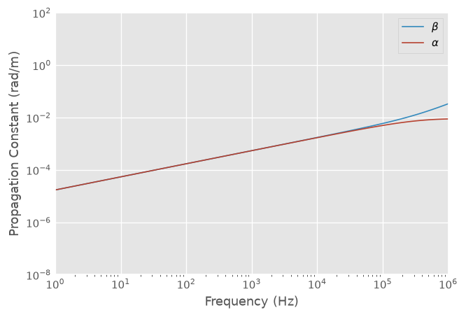

Transmission Line Properties#
[1]:
import matplotlib.pyplot as plt
import numpy as np
import skrf as rf
%matplotlib inline
from skrf.frequency import Frequency
from skrf.media import DistributedCircuit
rf.stylely()
# define a frequency object
freq = Frequency.from_f(np.logspace(0,6,101), unit='Hz')
def func(C=93,I=273, R=0, G=0):
coax = DistributedCircuit(frequency = freq,
C =C*1e-12,#F/m
I =I*1e-9, #H/m
R =10**(-R),#53e-3, #Ohm/m
G =G, #S/m
)
freq.plot(coax.gamma.imag,label=r'$ \beta$')
freq.plot(coax.gamma.real, label=r'$ \alpha$')
plt.ylabel('Propagation Constant (rad/m)')
plt.ylim(1e-8,1e2)
plt.loglog()# impose log-log scaling
plt.legend()
[2]:
from ipywidgets import interact
interact(func, C=(0,100,10), I=(100,400,10), R =(0,10),G=(0,10));

[ ]: